地政学
パラマリボは南米大陸にありながら、オランダ語圏、カリブ海、アマゾン森林、ギアナ地方を結びます。国境、海洋資源、森林政策、移民、外交が首都へ集まり、小国の判断が地域政治へ波及します。海と森の窓口です。
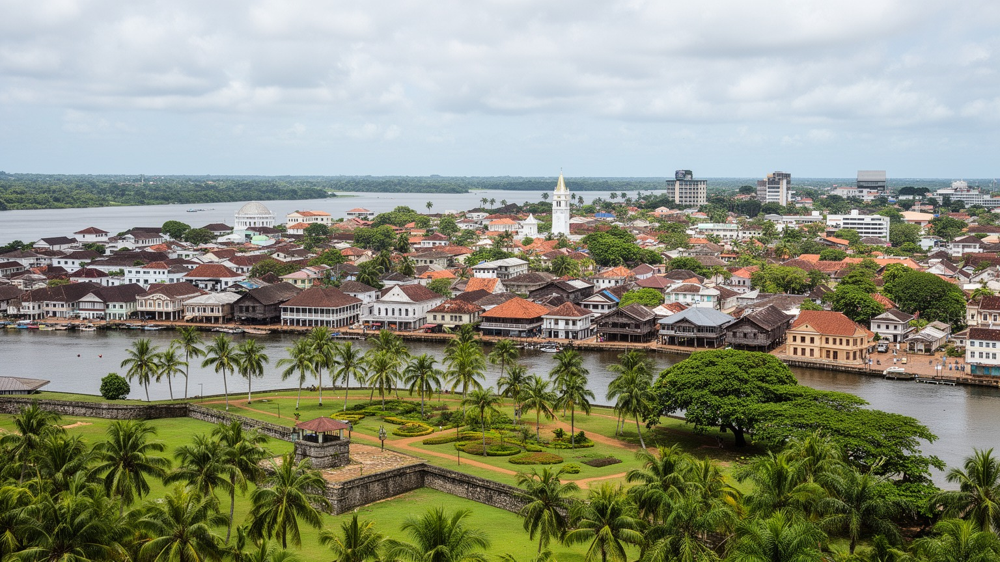
🇸🇷 スリナム / 南米北岸 / World City Atlas
スリナム川の低い河口に、政府、港、世界遺産の木造旧市街、市場、金と石油の資金、宗教多様性、内陸森林への入口が重なる首都です。
都市の骨格
パラマリボはスリナム川左岸の低地に置かれ、政府、港、市場、旧市街、宗教施設、教育機関が近接します。金と海上石油の時代にも、街の土台は水辺と木造都市の記憶です。
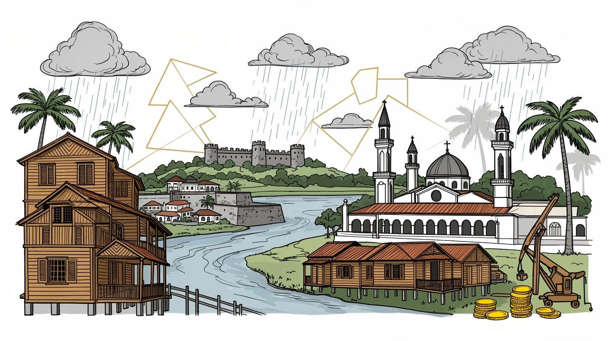
パラマリボは南米大陸にありながら、オランダ語圏、カリブ海、アマゾン森林、ギアナ地方を結びます。国境、海洋資源、森林政策、移民、外交が首都へ集まり、小国の判断が地域政治へ波及します。海と森の窓口です。
行政、港湾商業、金融、小売、教育、観光に、金鉱業と沖合石油の資金が重なります。仕事は増えても、物価、為替、技能格差、公共投資の配分が家計を左右し、成長の質が問われます。訓練も要ります。若者に響きます。
クレオール、ヒンドゥスターニー、ジャワ系、マルーン、先住民、中国系、ユダヤ系の記憶が、教会、モスク、寺院、シナゴーグ、食卓、言葉に重なります。隣り合う祈りが首都の個性です。祭礼も街を深く結びます。
旧市街、ゼーランディア砦、ウォーターカント、市場、パルメントインを歩けば観光の入口が見えます。同時に住民は雨、排水、交通、住宅費、治安、医療、教育を毎日の課題として抱えます。川辺の夕景も日常です。
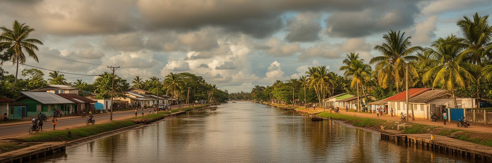
パラマリボはスリナム川の左岸、河口に近い低い土地に広がる首都です。大西洋へ向かう川、湿った沿岸低地、運河、排水路、河岸道路が、市街地の使い方を決めています。旧市街の木造建築や並木道は穏やかに見えますが、強い雨、潮位、排水の詰まりは通勤、学校、市場、港湾作業をすぐに乱します。熱帯雨林気候の都市では、涼しい海風、湿った木の匂い、スコールが屋根を打つ音が同じ日常の中にあります。水辺は交易と観光の入口である一方、気候変動でリスクが増す場所でもあります。住宅地の側溝、道路の高さ、橋、ポンプ、ゴミ収集が機能しなければ、中心部の小さな浸水も生活全体に響きます。パラマリボを読む時、川は背景ではありません。川は植民地期の砦と港を置かせ、内陸の森林や鉱山から人と物を運び、現在も首都の経済と防災をつないでいます。河岸の散歩道や市場のにぎわいは魅力ですが、その下には水を制御する地味な都市運営があります。低い土地に国家の中心を保つことは、成長のたびに排水、防災、公共空間を更新し続ける責任を伴います。朝のバス、子どもの登校、露店の搬入、港の荷役は、どれも水の状態に左右されます。川を味方にする都市運営が、首都の日々の時間を守っています。水辺の開放感を楽しむには、見えにくい維持管理を続ける必要があります。雨季ほどその意味は濃くなります。
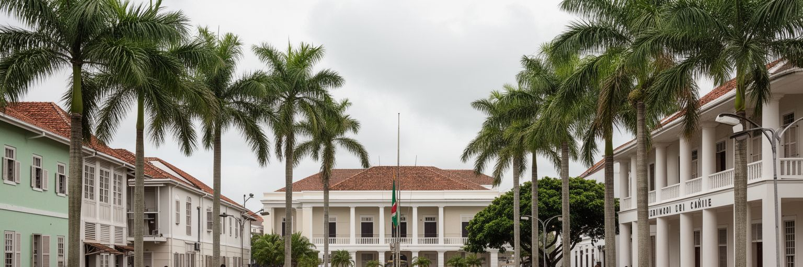
パラマリボには大統領府、国民議会、省庁、裁判所、大使館、報道機関が集まり、スリナムの政治判断がここで形になります。国は南米大陸にありますが、オランダ語圏の制度、カリブ共同体との関係、ギアナ地方の国境、アマゾン森林、海洋資源が一つの外交空間を作っています。首都の会議では、財政再建、債務、金鉱業の管理、沖合石油、先住民とマルーンの土地権、森林保全、移民政策が扱われます。人口規模は大きくなくても、政策の射程は国土の奥地や沖合の海域まで届きます。小国の首都では、制度への信頼が都市の日常にも直結します。公共投資の優先順位、汚職対策、選挙、司法、警察、地方行政の調整が、学校、病院、道路、港、住宅地の実感を変えるからです。パラマリボの政治性は巨大な官庁街の威圧感ではなく、歴史的な木造都市の近い距離で国家運営が行われることにあります。市場へ向かう人、大学へ通う若者、内陸から来る代表者、外交官、ラジオ局やSNSで議論を追う住民が同じ小さな首都を使います。その近さは合意形成を助ける面もありますが、利害の衝突を隠しにくくもします。資源収入が増える時代ほど、首都は透明な制度を作れるかを問われます。政治の失敗は抽象的な不満にとどまらず、為替、燃料、輸入品、給与、公共工事の遅れとして家計へ届きます。だからこそ首都の制度運営は、暮らしの基盤でもあります。
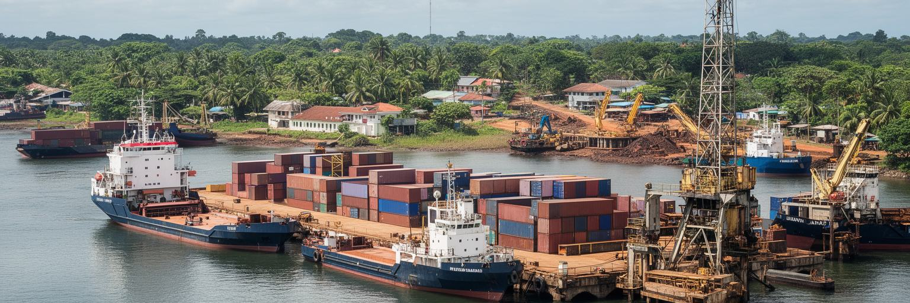
スリナム経済を動かす主要な力は、金、石油、農産物、木材、サービスです。パラマリボは鉱山都市ではありませんが、契約、金融、行政許認可、輸入、港湾物流、法律、保険、人材募集、宿泊、小売を通じて資源経済を受け止めます。内陸の金鉱業は雇用と外貨を生む一方、水銀汚染、森林破壊、違法採掘、先住民やマルーンの土地権をめぐる緊張も伴います。沖合石油開発は新しい期待を生み、港、道路、教育、建設、専門サービスに需要を広げますが、財政運営や環境責任を誤れば格差と不信を強めます。首都の労働市場では、公務員、港湾労働者、建設作業員、銀行員、運転手、商店主、ホテル従業員、警備員が、資源ブームの影響を異なる形で受けます。物価や家賃が上がれば、収入が増えない世帯はむしろ苦しくなります。パラマリボの資源経済を見るには、輸出額だけでなく、収入が道路、排水、学校、医療、住宅、職業訓練へ変わるかを見なければなりません。港へ入る機械や資材の流れは成長の象徴ですが、同じ街で若者が安定した技能を得られるかが、都市の将来を決めます。外資企業と政府契約が増える時には、地元企業が下請けだけで終わらない仕組みも必要です。資源を学び、管理し、利益を地域に残す人材を育ててこそ、首都の経済は厚くなります。公共調達の透明性も、成長への信頼を支えます。
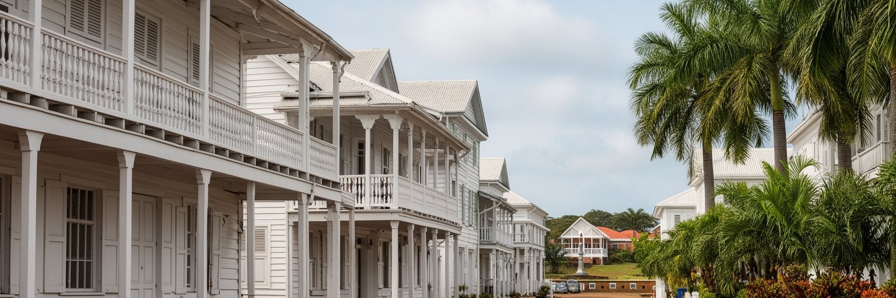
パラマリボ歴史地区は、オランダ植民地期の街路、木造建築、庭、広場、砦、河岸が残る世界遺産です。白い木造ファサード、深い庇、ベランダ、高床の構え、並木道は、熱帯の暑さと雨に応答した都市の知恵でもあります。ゼーランディア砦、ウォーターカント、パルメントイン、旧官庁街を歩くと、交易、奴隷制、植民地支配、独立後の国家形成が同じ風景に重なります。遺産は美しい写真のためだけにあるわけではありません。木造建築は湿気、火災、老朽化、修復費、所有権、用途変更の問題を抱え、放置すれば急速に失われます。観光開発が進めば、修復職人、ガイド、小商い、文化団体に仕事を生む一方、住民の生活が押し出される危険もあります。パラマリボの旧市街を守るには、建物単体の保存だけでなく、排水、歩道、交通、治安、公共施設、教育を合わせて整える必要があります。歴史地区が現役の都市として使われ続けるほど、遺産は厚みを持ちます。古い建物に学校、事務所、店、博物館、住宅が入り、人が日常的に歩くことで、木造都市の記憶は観賞物ではなく公共の資産になります。壊さず使い続ける技術こそ、この首都の品格を支えます。修復には資金だけでなく、木材を扱う職人、消防、建築規制、所有者の合意が必要です。観光収入を保存へ戻す循環を作れるかが、旧市街の未来を左右します。
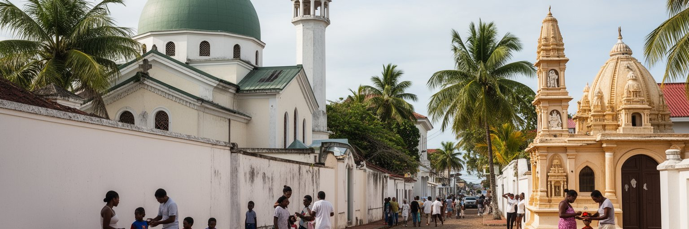
パラマリボは、多宗教都市として非常に印象的です。教会、モスク、ヒンドゥー寺院、シナゴーグが比較的近い距離にあり、クレオール、ヒンドゥスターニー、ジャワ系、マルーン、先住民、中国系、ユダヤ系、レバノン系などの歴史が街の言葉と食卓に重なります。オランダ語が公用語でありながら、スラナン語、サルナミ、ジャワ語系の言葉、英語、ポルトガル語、先住民の言語も都市の音を作ります。この多様性は、奴隷制、年季奉公、植民地支配、移民、内陸からの移動という複雑な歴史を背景にしています。宗教施設は礼拝だけでなく、教育、葬儀、結婚、慈善、地域の相談、祝祭を支えます。市場や屋台ではロティ、ナシ、サト、ポン、魚料理、甘い菓子が並び、揚げ物の香りやスピーカーの音が移民史を日常に変えています。ただし、多様性は常に調和だけを意味するわけではありません。政治的な動員、所得差、地域差、差別の記憶が、民族や宗教の線と重なることもあります。パラマリボの強さは、違いを観光向けの色彩として消費することではなく、互いの祈り、休日、食、家族の形を尊重しながら同じ公共空間を使うことにあります。隣り合う礼拝所は、共存が毎日の実践であることを示しています。学校、職場、病院、サッカーやクリケット、カセコの音楽が流れる夜の場で人びとが交わる時、宗教や出自は境界であると同時に会話の入口にもなります。首都の文化は、その重なりを日々作り直しています。
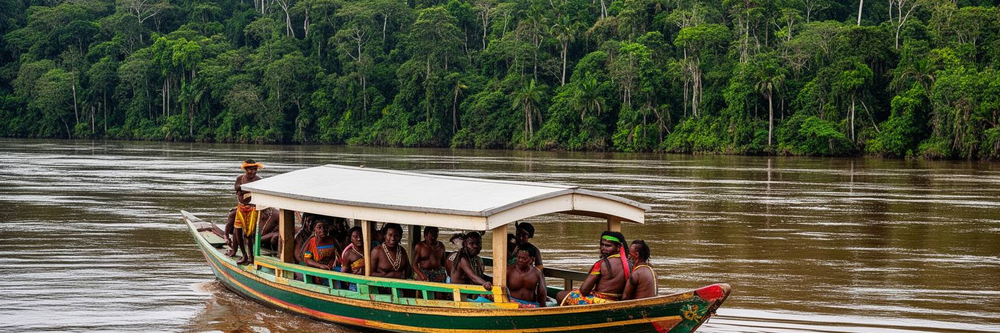
スリナムの人口と行政機能は沿岸部に集中しますが、国土の大部分は熱帯林、河川、サバンナ、鉱山地域、先住民とマルーンのコミュニティを含む内陸です。パラマリボから見る内陸は、金、木材、水力、観光、炭素吸収、国境管理の対象に見えがちですが、そこには独自の土地利用、自治、言語、宗教、教育、医療、交通の課題があります。首都の省庁や企業で決まる採掘許可、道路建設、森林保全、保護区、観光開発は、川沿いの村や森の暮らしに直接影響します。内陸からは、仕事、医療、教育、行政手続きのために人が首都へ来ます。逆に、首都からは燃料、食料、建材、政治的決定、価格変動が内陸へ向かいます。森林は世界的な気候政策で価値を持ちますが、その価値が地域住民の権利を弱める形で扱われてはいけません。パラマリボが公平な首都であるためには、沿岸の便利さだけを高めるのではなく、内陸の声を政策に反映する必要があります。資源収入を道路や学校へ投じる時も、土地権、環境、文化、地域の意思決定を尊重しなければ、成長は新しい分断を生みます。海岸首都の視線が森を単なる資源として見るのか、国の共同の基盤として見るのかが問われています。内陸への交通は時間も費用もかかり、医療や教育へのアクセスは都市部と大きく違います。首都が遠い地域の不便を理解できるかどうかが、国の一体感を左右します。
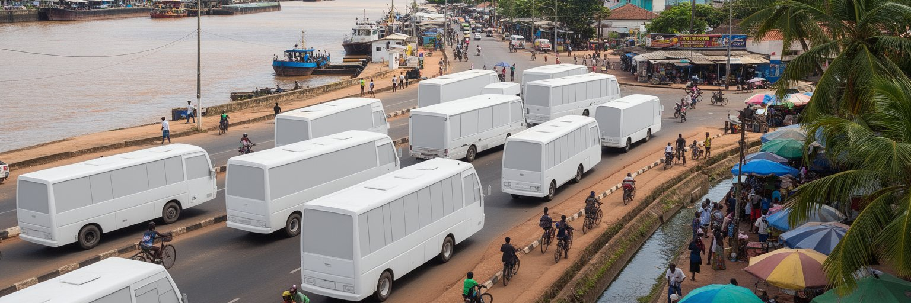
パラマリボの港湾と移動は、首都の経済と日常を結びます。スリナム川沿いには貨物、燃料、建材、食品、機械、消費財が入り、内陸や沿岸の町へ向かいます。港は単なる物流施設ではなく、通関、倉庫、運転、修理、清掃、警備、食堂、小売、金融を生む雇用の場です。市内ではバス、タクシー、自家用車、徒歩、自転車、河岸の移動が混ざり、通勤や通学の時間を決めます。道路幅が限られ、雨で排水が悪くなると、渋滞や歩行者の危険が増えます。経済成長で車や建設車両が増えるほど、歩道、横断、バス停、駐車、港湾アクセスの調整が重要になります。観光客は旧市街を歩きたい一方、住民は市場、学校、病院、役所、職場へ安全に行く必要があります。港湾投資が進んでも、生活道路や公共交通が置き去りになれば、首都の便利さは一部の企業だけに偏ります。パラマリボの移動を改善することは、物流効率だけでなく、教育、医療、治安、観光、環境にもつながります。河口都市では、水辺の道路、橋、排水、船の動き、歩行者空間を一体で考える必要があります。人と貨物が同じ狭い都市空間を使うからこそ、丁寧な交通運営が首都の質を決めます。バス停の周りでは果物や飲み物を売る小商いも生まれ、待ち時間の会話が地域情報を運びます。屋根、街灯、途切れない歩道だけでも、通勤や通学の負担は下がります。
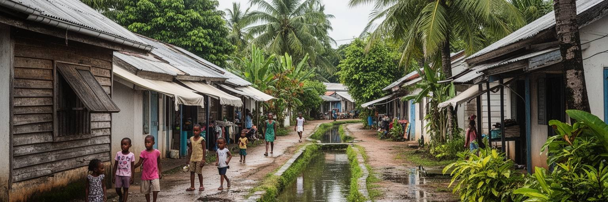
パラマリボの日常生活は、旧市街の景観や資源ニュースだけでは見えてきません。住民は朝の通勤、学校、買い物、礼拝、役所、病院、親族訪問を、雨の多い道路と排水路に沿って組み立てています。住宅には木造家屋、コンクリート住宅、賃貸住宅、郊外化した新しい地区があり、所得、家族構成、移民の背景によって住む場所が分かれます。金や石油への期待が高まると、建材費、家賃、土地価格、交通費も上がりやすくなります。安定した公務や専門職につける人には機会が増えても、非正規の小売、運転、清掃、露店、低賃金サービスに頼る世帯には負担が重くなります。水道、電力、ゴミ収集、排水、インターネット、街灯、学校、診療所は、都市の暮らしを支える基本です。雨で道路が浸かれば、子どもの通学や商店の仕入れが乱れます。高齢者は暑さ、医療への移動、年金の目減りに敏感で、夜の治安への不安は女性や若者の居場所も狭めます。家族の助け合い、海外からの送金、宗教コミュニティ、近所づきあいも生活を支えていますが、それだけに頼る都市は脆くなります。パラマリボの豊かさは、国のGDPではなく、住民が毎日の用事を安心して済ませられるかに表れます。成長の成果を住宅と公共サービスへつなぐことが必要です。旧市街の近くで暮らす人、郊外から通う人、内陸から一時滞在する人では必要な支援も違います。細かな違いを見分ける行政が、首都の生活を支えます。
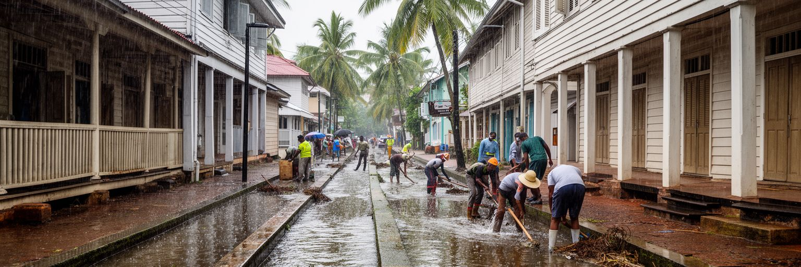
パラマリボの気候リスクは、低地都市としての現実です。強い熱帯雨、高潮、河川の水位、海面上昇、排水路の詰まり、舗装の傷み、ゴミ処理の不足が重なると、中心部でも住宅地でも浸水が起こりやすくなります。旧市街の木造建築は湿気と火災に弱く、雨漏りや基礎の劣化は遺産保全にも関わります。洪水は自然現象であると同時に、社会の不平等を映します。排水の悪い場所に住む人、修理費を払えない人、車を持たない人、情報を得にくい人ほど、被害が長引きやすいからです。気候対策は大きな堤防だけでは足りません。側溝の清掃、ポンプの維持、道路の高さ、建築規制、緑地、河岸の管理、避難計画、学校や病院の機能維持が必要です。資源収入が期待される国だからこそ、防災と環境への投資は都市の信頼を左右します。排水路をふさぐ開発や、短期的な建設だけを優先すれば、将来の被害は大きくなります。パラマリボでは、雨の日に市場が開き、子どもが学校へ行き、救急車が通れることが都市の強さを示します。水辺の美しさを守るには、水を逃がす地味な仕事を続ける必要があります。住民の清掃習慣と行政の設備投資がそろって初めて、低地の首都は持続できます。気候情報を共有し、脆い住宅を補強し、避難場所を知っておくことも重要です。大きな公共事業と近所の備えが同じ方向を向く時、被害は小さくできます。
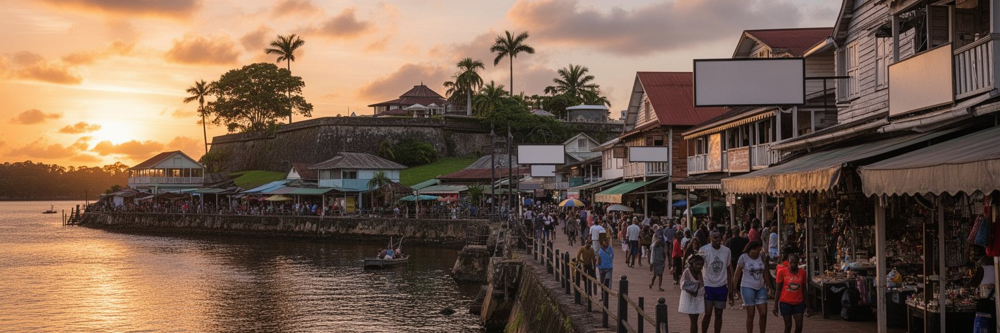
パラマリボの観光は、カリブ海の砂浜リゾートとは違う深さを持ちます。旅行者はゼーランディア砦、ウォーターカント、木造旧市街、パルメントイン、市場、宗教施設、川辺の夕景を歩き、スリナムの歴史と多文化を短い距離で見られます。多くの旅はそこから内陸の熱帯林、川、自然保護区、野生生物、先住民やマルーンの地域へ向かいますが、首都はその準備と理解の入口です。ホテル、ガイド、旅行会社、許可、交通、銀行、医療、通信が都市に集まるため、観光の質はパラマリボの公共空間に左右されます。歩道が傷み、案内が弱く、治安や洪水の不安が大きければ、街歩きの魅力は十分に伝わりません。逆に、歴史建築を修復し、地元ガイドや職人、小商い、文化団体に利益が残る仕組みを作れば、観光は経済の多様化に役立ちます。重要なのは、旧市街を舞台装置として消費するのではなく、奴隷制、移民、宗教、ロティやポンの食、木造技術、川の交易を学べる都市体験にすることです。夜には食堂やバーから音楽が流れ、祝祭の日は家族連れと子どもが通りに増えます。パラマリボを歩く旅は、スリナムの小ささではなく、歴史の厚さを感じさせます。川辺の一時間にも、植民地、独立、森林、資源経済、日常生活が重なっています。旅行者が首都で時間を使えば、内陸へ向かう旅の見方も変わります。短い滞在でも、首都を歩く意味は十分にあります。
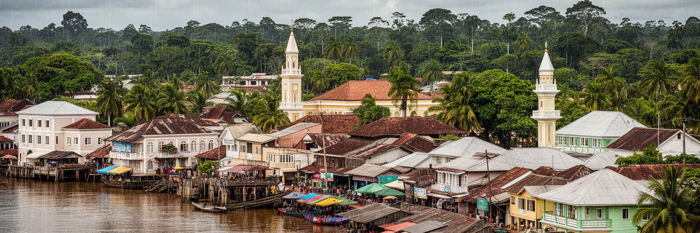
パラマリボは人口規模で見れば巨大都市ではありません。それでも、現代の都市を考える重要な論点が濃く集まっています。低地の気候リスク、世界遺産の木造旧市街、多民族と多宗教の共存、金鉱業と沖合石油、森林保全、内陸地域の権利、港湾物流、住宅費、公共サービス、観光が、スリナム川沿いの首都に重なります。世界都市を金融取引や人口だけで測ると、このような都市の意味は見えにくくなります。パラマリボの世界性は、資源の価格、気候変動、植民地史、移民、宗教、森林政策が住民の日常へ直接届くことにあります。GDPが伸びても、排水路が詰まり、木造建築が失われ、若者が技能を得られず、内陸の声が無視されれば、成長は薄いものになります。逆に、資源収入を学校、医療、交通、防災、文化遺産、職業訓練へ変えられれば、小さな首都は国の未来を大きく動かします。街を歩くと、川の風、教会とモスクの近さ、市場の声、古い木造建築、官庁の静けさが近い距離で並びます。その近さこそ、パラマリボを読む価値です。派手なスカイラインではなく、水、木、祈り、森林、資源をどう公共の未来へ変えるかが、この首都の品格を決めます。都市の規模が小さいからこそ、制度の良し悪しや投資の優先順位は街角に早く表れます。パラマリボは、成長を生活へ翻訳できるかを試す場所です。